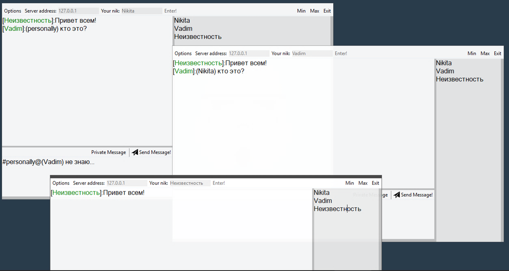
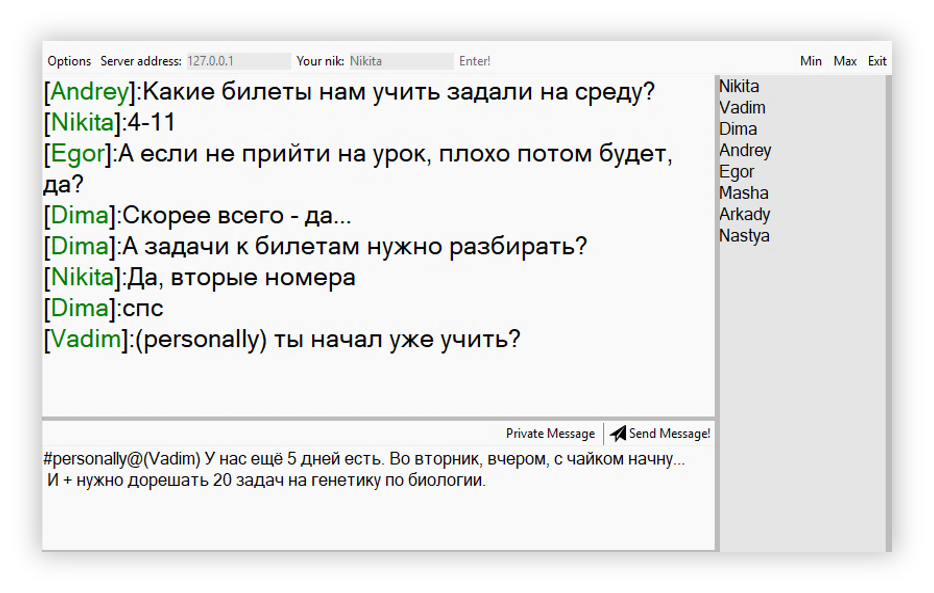
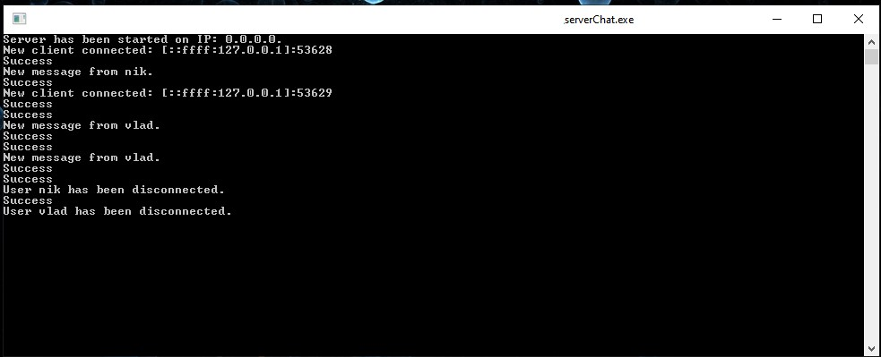
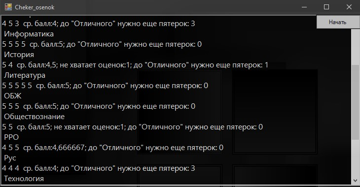

Проект с кружка робототехники
Робот, для создания которого использовались 3D моделировование, печать на 3D принтере и программирование микроконтроллеров Arduino
Гексапод
Полное название проекта: Шагоход для передвижения по пересеченной местности.
В данной работе была поставлена задача собрать полностью функциональную модель робота-шагохода и разобраться в принципах его работы. Также была поставлена задача разработать для шагохода систему, при помощи которой он сможет распознавать неровности почвы и, при возможности, подстраиваться под них.
Научный руководитель - Гажур Илья Александрович.
Реферат о проекте

Чат для локальной сети
TCP, C#, Сокеты
Клиент
Все пишут в одну беседу,а если есть что-то личное, то можно написать приватное сообщение одному из пользователей
 Сервер
Никуда без сервера (это же TCP), который распределяет сообщения, но он ничего не хранит и выводит только отчетную информацию.
Приложения для учебы
Всё, что как-то может пригодиться в учёбе
Анализ оценок
Приложение, которое помимо среднего балла по предмету пишет, нужны ли ещё оценки для аттестации, и сколько пятёрок нужно получить, чтобы исправить оценку по предмету на выбранную.

Решатор 1.2
Приложение генерирует код программы, определяющей заданные значения. Создано по образцам заданий ОГЭ по информатике; рассчитано на PascalABC.
Подробнее о приложении.Запись функционала
Скачать версию 1.2


Перевод систем счисления
Простой переводчик систем счисления с возможностью показа алгоритма перевода.
Скачать переводчик

Текстовый редактор
Версии текстового редактора, написанные на C#
Блокнот 2.5
Улучшенная версия блокнота, с переработанным дизайном, и поддержкой сочетаний клавиш: Добавить(Ctrl+N), Сохранить(Ctrl+S), Удалить(Ctrl+D)
Скачать блокнот 2.5.3


Почти как "Головные мюсли"
Собственно, это и есть этот сайт.
Никита Гвоздков